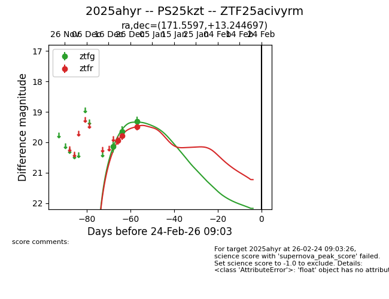
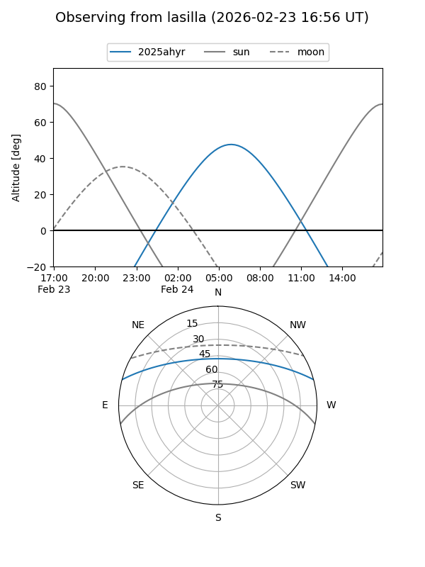
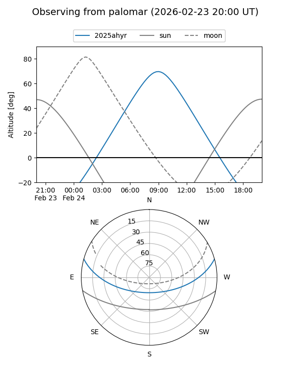
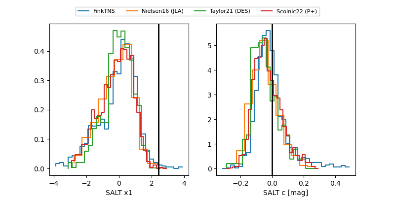

2025ahyr
Target 2025ahyr at 2025-12-22 21:01
Aliases and brokers:
FINK: fink-portal.org/ZTF25acivyrm
Lasair: lasair-ztf.lsst.ac.uk/objects/ZTF25acivyrm
ALeRCE: alerce.online/object/ZTF25acivyrm
TNS: wis-tns.org/object/2025ahyr
YSE: ziggy.ucolick.org/yse/transient_detail/2025ahyr
alt names
ZTF25acivyrm (ztf,fink_ztf)
2025ahyr (tns,yse)
Coordinates:
equatorial (ra, dec) = 171.5597,+13.24470
equatorial (HMS+DMS) = 11:26:14.34,+13:14:40.91
galactic (l, b) = (243.5945,+65.72879)
Flags:
Photometry:
last ztfg=19.64, ztfr=19.94
2 ztfg, 1 ztfr detections
Lightcurve

Visibility


Additional plots
